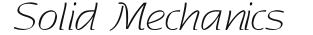

Skip to main content
Back to top
Ctrl
+
K

阅读指引
数值计算
数值积分
梯形公式
辛普森公式
代数精度
Gaussian 公式
有限元计算
形函数
等参变换
线弹性问题
张量分析
基本定义
正交变换
张量不变量
应变张量
应变与位移
格林应变张量
速度梯度场
反对称矩阵
内功和应变能
应力张量
第一类 Piola-Kirchhoff 应力张量
第二类 Piola-Kirchhoff 应力张量
客观应力率
Jaumann 应力率
Green-Naghdi 应力率
Treusdell 应力率
弹性力学
简介
应力 应变 位移
弹性力学的基本假设
平衡方程
几何方程
本构方程
两类平面问题
边界条件
位移法和应力法
数值方法简介
塑性力学
简介
形变分解
单轴拉伸实验
屈服准则
Tresca 屈服准则
Mises 屈服准则
Mohr–Coulomb 屈服准则
Drucker–Prager 屈服准则
Gurson 屈服准则
各向异性屈服准则
硬化模型
各向同性硬化模型
Repository
Open issue
.md
.pdf
硬化模型
硬化模型
#